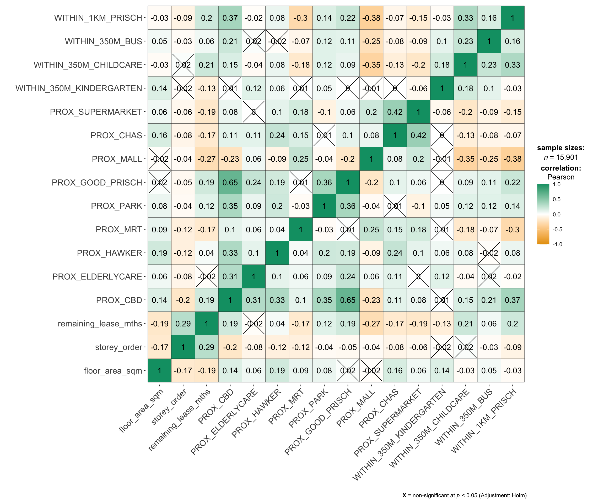
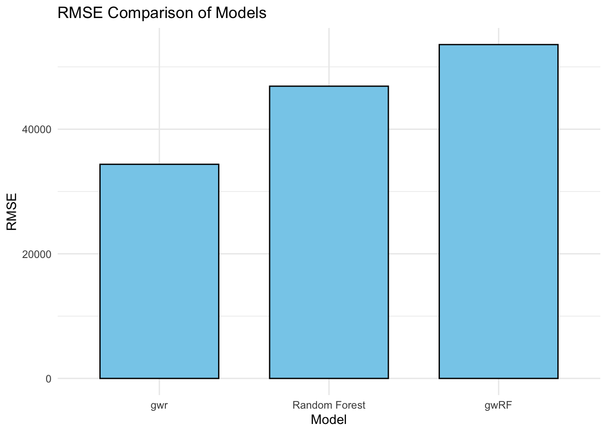
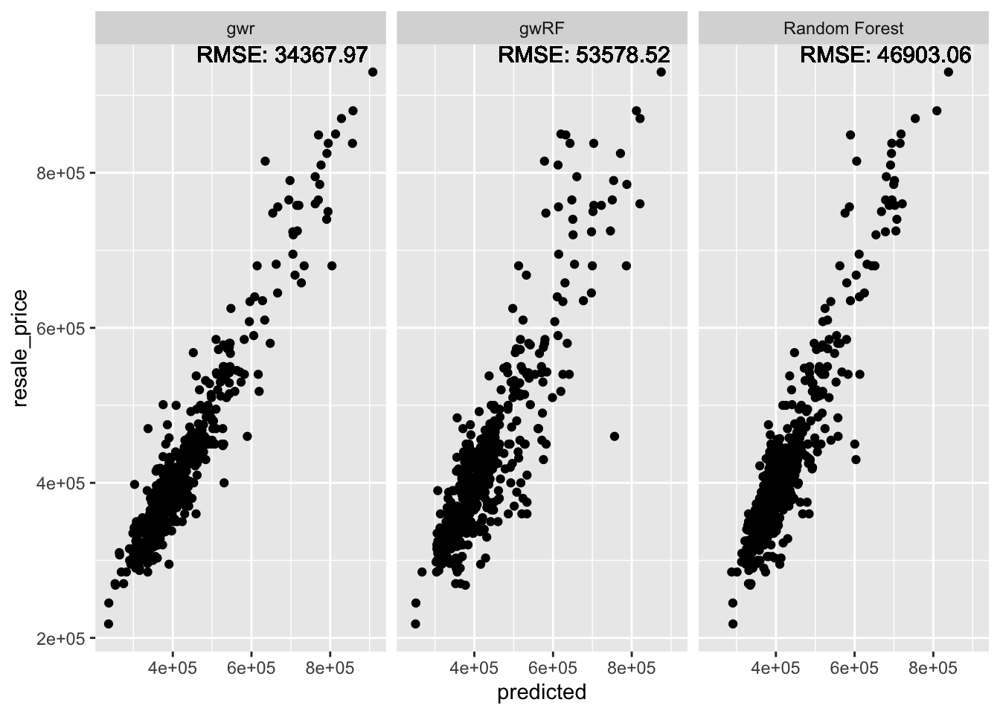
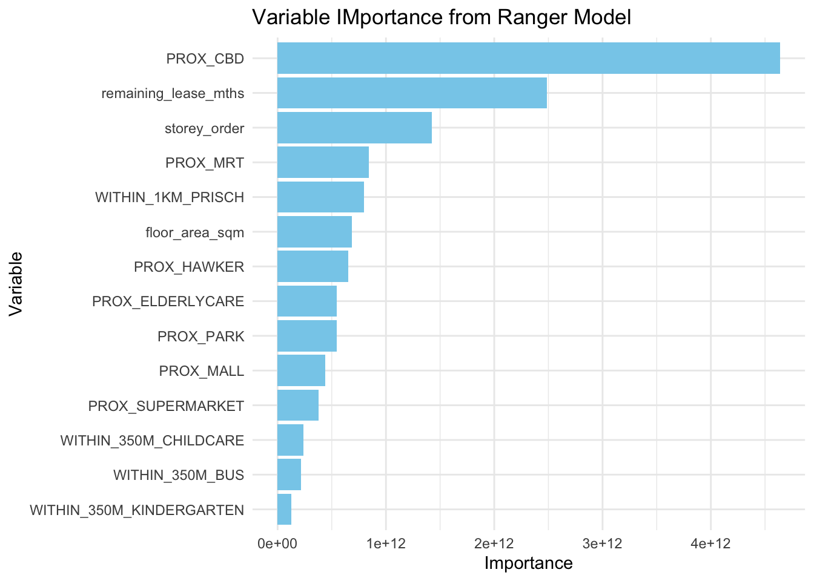

pacman::p_load(sf, spdep, GWmodel, SpatialML,
tmap, rsample, yardstick, tidyverse,
knitr, kableExtra, spatialRF)In-class Exercise 12
Note
Predictive Model VS Forecasting Model
Predictive Model
Do not consider time as the factor, no trending.
Time independent
Forecasting Model
- Used to estimate future value based on historical data, often consider time as a factor.
Recursive Partitioning
Decision Tree => categorical output
Regression Tree => Continuous(numeric) output
Getting Started
Import the packages
Preparing Data
mdata <- read_rds("data/rds/mdata.rds")Data Sampling
Calibrating predictive models are computational intensive, especially random forest method is used. For quick prototyping, a 10% sample will be selected at random from the data by using the code chunk below.
set.seed(1234)
HDB_sample <- mdata %>%
sample_n(1500)Checking of overlapping point
overlapping_points <- HDB_sample %>%
mutate(overlap = lengths(st_equals(., .)) >1)
summary(overlapping_points$overlap) Mode FALSE TRUE
logical 1047 453 Spatial jitter
HDB_sample <- HDB_sample %>%
st_jitter(amount = 5)Data Sampling for training/test data
set.seed(1234)
resale_split <- initial_split(HDB_sample,
prop = 6.67/10,)
train_data <- training(resale_split)
test_data <- testing(resale_split)write_rds(train_data, "data/rds/train_data.rds")
write_rds(test_data, "data/rds/test_data.rds")train_data <- read_rds("data/rds/train_data.rds")
test_data <- read_rds("data/rds/test_data.rds")Multicollinearity check
mdata_nogeo <- mdata %>%
st_drop_geometry()
ggstatsplot::ggcorrmat(mdata_nogeo[,2:17], matrix.type = "full")
Building a non-spatial multiple linear regression
price_mlr <- lm(resale_price ~ floor_area_sqm +
storey_order + remaining_lease_mths +
PROX_CBD + PROX_ELDERLYCARE + PROX_HAWKER +
PROX_MRT + PROX_PARK + PROX_MALL +
PROX_SUPERMARKET + WITHIN_350M_KINDERGARTEN +
WITHIN_350M_CHILDCARE + WITHIN_350M_BUS +
WITHIN_1KM_PRISCH,
data=train_data)
summary(price_mlr)
Call:
lm(formula = resale_price ~ floor_area_sqm + storey_order + remaining_lease_mths +
PROX_CBD + PROX_ELDERLYCARE + PROX_HAWKER + PROX_MRT + PROX_PARK +
PROX_MALL + PROX_SUPERMARKET + WITHIN_350M_KINDERGARTEN +
WITHIN_350M_CHILDCARE + WITHIN_350M_BUS + WITHIN_1KM_PRISCH,
data = train_data)
Residuals:
Min 1Q Median 3Q Max
-167624 -37265 -415 34811 224601
Coefficients:
Estimate Std. Error t value Pr(>|t|)
(Intercept) 115703.7 34303.4 3.373 0.000773 ***
floor_area_sqm 2778.6 292.3 9.507 < 2e-16 ***
storey_order 12698.2 1071.0 11.857 < 2e-16 ***
remaining_lease_mths 350.2 14.6 23.997 < 2e-16 ***
PROX_CBD -16225.6 630.1 -25.751 < 2e-16 ***
PROX_ELDERLYCARE -11330.9 3220.8 -3.518 0.000455 ***
PROX_HAWKER -19964.1 4021.1 -4.965 8.10e-07 ***
PROX_MRT -39652.5 5412.3 -7.326 4.92e-13 ***
PROX_PARK -15878.3 4609.2 -3.445 0.000595 ***
PROX_MALL -15910.9 6438.1 -2.471 0.013628 *
PROX_SUPERMARKET -18928.5 13305.0 -1.423 0.155150
WITHIN_350M_KINDERGARTEN 9309.7 2024.3 4.599 4.80e-06 ***
WITHIN_350M_CHILDCARE -1619.5 1181.0 -1.371 0.170572
WITHIN_350M_BUS -447.7 738.7 -0.606 0.544624
WITHIN_1KM_PRISCH -10698.0 1543.5 -6.931 7.55e-12 ***
---
Signif. codes: 0 '***' 0.001 '**' 0.01 '*' 0.05 '.' 0.1 ' ' 1
Residual standard error: 61270 on 985 degrees of freedom
Multiple R-squared: 0.7424, Adjusted R-squared: 0.7387
F-statistic: 202.7 on 14 and 985 DF, p-value: < 2.2e-16Predictive Modelling with gwr
Computing bw
gwr_bw_train_ad <- bw.gwr(resale_price ~ floor_area_sqm +
storey_order + remaining_lease_mths +
PROX_CBD + PROX_ELDERLYCARE + PROX_HAWKER +
PROX_MRT + PROX_PARK + PROX_MALL +
PROX_SUPERMARKET + WITHIN_350M_KINDERGARTEN +
WITHIN_350M_CHILDCARE + WITHIN_350M_BUS +
WITHIN_1KM_PRISCH,
data=train_data,
approach="CV",
kernel="gaussian",
adaptive=TRUE,
longlat=FALSE)Adaptive bandwidth: 625 CV score: 3.45902e+12
Adaptive bandwidth: 394 CV score: 3.231833e+12
Adaptive bandwidth: 250 CV score: 2.914799e+12
Adaptive bandwidth: 162 CV score: 2.611012e+12
Adaptive bandwidth: 107 CV score: 2.240085e+12
Adaptive bandwidth: 73 CV score: 1.971696e+12
Adaptive bandwidth: 52 CV score: 1.797428e+12
Adaptive bandwidth: 39 CV score: 1.659675e+12
Adaptive bandwidth: 31 CV score: 1.573831e+12
Adaptive bandwidth: 26 CV score: 1.550325e+12
Adaptive bandwidth: 23 CV score: 1.543112e+12
Adaptive bandwidth: 21 CV score: 1.520366e+12
Adaptive bandwidth: 19 CV score: 1.516391e+12
Adaptive bandwidth: 19 CV score: 1.516391e+12 Model Calibration
gwr_ad <- gwr.basic(formula = resale_price ~
floor_area_sqm + storey_order +
remaining_lease_mths + PROX_CBD +
PROX_ELDERLYCARE + PROX_HAWKER +
PROX_MRT + PROX_PARK + PROX_MALL +
PROX_SUPERMARKET + WITHIN_350M_KINDERGARTEN +
WITHIN_350M_CHILDCARE + WITHIN_350M_BUS +
WITHIN_1KM_PRISCH,
data=train_data,
bw=20,
kernel = 'gaussian',
adaptive=TRUE,
longlat = FALSE)Computing test data bw
gwr_bw_test_adaptive <- bw.gwr(resale_price ~ floor_area_sqm +
storey_order + remaining_lease_mths +
PROX_CBD + PROX_ELDERLYCARE + PROX_HAWKER +
PROX_MRT + PROX_PARK + PROX_MALL +
PROX_SUPERMARKET + WITHIN_350M_KINDERGARTEN +
WITHIN_350M_CHILDCARE + WITHIN_350M_BUS +
WITHIN_1KM_PRISCH,
data=test_data,
approach="CV",
kernel="gaussian",
adaptive=TRUE,
longlat=FALSE)Adaptive bandwidth: 316 CV score: 1.752237e+12
Adaptive bandwidth: 203 CV score: 1.635879e+12
Adaptive bandwidth: 132 CV score: 1.452397e+12
Adaptive bandwidth: 89 CV score: 1.292481e+12
Adaptive bandwidth: 61 CV score: 1.115816e+12
Adaptive bandwidth: 45 CV score: 1.007733e+12
Adaptive bandwidth: 34 CV score: 886108835295
Adaptive bandwidth: 28 CV score: 859814489075
Adaptive bandwidth: 23 CV score: 855911813885
Adaptive bandwidth: 21 CV score: 8.46041e+11
Adaptive bandwidth: 19 CV score: 836838925898
Adaptive bandwidth: 18 CV score: 832338120316
Adaptive bandwidth: 17 CV score: 833802730460
Adaptive bandwidth: 18 CV score: 832338120316 Predicting with test data
gwr_pred <- gwr.predict(formula = resale_price ~
floor_area_sqm + storey_order +
remaining_lease_mths + PROX_CBD +
PROX_ELDERLYCARE + PROX_HAWKER +
PROX_MRT + PROX_PARK + PROX_MALL +
PROX_SUPERMARKET + WITHIN_350M_KINDERGARTEN +
WITHIN_350M_CHILDCARE + WITHIN_350M_BUS +
WITHIN_1KM_PRISCH,
data=train_data,
predictdata = test_data,
bw=20,
kernel = 'gaussian',
adaptive=TRUE,
longlat = FALSE)Saving predicted values
gwr_pred_df <- as.data.frame(
gwr_pred$SDF$prediction) %>%
rename(gwr_pred = "gwr_pred$SDF$prediction")Predictive Modelling with RF method
Data preparation
coords <- st_coordinates(HDB_sample)
coords_train <- st_coordinates(train_data)
coords_test <- st_coordinates(test_data)To drop geometry column of the sf data.frame by using st_drop_geometry() of sf package.
train_data_nogeom <- train_data %>%
st_drop_geometry()Calibrating RF model
set.seed(1234)
rf <- ranger(resale_price ~ floor_area_sqm + storey_order +
remaining_lease_mths + PROX_CBD + PROX_ELDERLYCARE +
PROX_HAWKER + PROX_MRT + PROX_PARK + PROX_MALL +
PROX_SUPERMARKET + WITHIN_350M_KINDERGARTEN +
WITHIN_350M_CHILDCARE + WITHIN_350M_BUS +
WITHIN_1KM_PRISCH,
data=train_data_nogeom)Preparing the test data
test_data_nogeom <- cbind(
test_data,coords_test) %>%
st_drop_geometry()Predicting with rf
rf_pred <- predict(rf, data = test_data_nogeom)Saving the predicted values
rf_pred_df <- as.data.frame(rf_pred$predictions) %>%
rename(rf_pred = "rf_pred$predictions")Predictive Modelling with SpatialML
set.seed(1234)
grf_ad <- grf(formula = resale_price ~ floor_area_sqm + storey_order +
remaining_lease_mths + PROX_CBD + PROX_ELDERLYCARE +
PROX_HAWKER + PROX_MRT + PROX_PARK + PROX_MALL +
PROX_SUPERMARKET + WITHIN_350M_KINDERGARTEN +
WITHIN_350M_CHILDCARE + WITHIN_350M_BUS +
WITHIN_1KM_PRISCH,
dframe=train_data_nogeom,
bw=20,
kernel="adaptive",
coords=coords_train)Ranger result
Call:
ranger(resale_price ~ floor_area_sqm + storey_order + remaining_lease_mths + PROX_CBD + PROX_ELDERLYCARE + PROX_HAWKER + PROX_MRT + PROX_PARK + PROX_MALL + PROX_SUPERMARKET + WITHIN_350M_KINDERGARTEN + WITHIN_350M_CHILDCARE + WITHIN_350M_BUS + WITHIN_1KM_PRISCH, data = train_data_nogeom, num.trees = 500, mtry = 4, importance = "impurity", num.threads = NULL)
Type: Regression
Number of trees: 500
Sample size: 1000
Number of independent variables: 14
Mtry: 4
Target node size: 5
Variable importance mode: impurity
Splitrule: variance
OOB prediction error (MSE): 2074009887
R squared (OOB): 0.8556679
floor_area_sqm storey_order remaining_lease_mths
6.858004e+11 1.422012e+12 2.486068e+12
PROX_CBD PROX_ELDERLYCARE PROX_HAWKER
4.638477e+12 5.479231e+11 6.521805e+11
PROX_MRT PROX_PARK PROX_MALL
8.441291e+11 5.449257e+11 4.405820e+11
PROX_SUPERMARKET WITHIN_350M_KINDERGARTEN WITHIN_350M_CHILDCARE
3.776907e+11 1.277977e+11 2.369706e+11
WITHIN_350M_BUS WITHIN_1KM_PRISCH
2.184408e+11 7.997281e+11
Min. 1st Qu. Median Mean 3rd Qu. Max.
-290000.0 -19074.5 263.3 -604.3 19431.5 275662.5
Min. 1st Qu. Median Mean 3rd Qu. Max.
-37287.59 -2801.98 35.06 37.66 2933.98 43811.08
Min Max Mean StD
floor_area_sqm 0 93075253749 6571492820 12109759836
storey_order 41626142 169473589577 6787039655 17337139394
remaining_lease_mths 154073349 133768506012 17023357410 27855240541
PROX_CBD 110074875 87093093473 7763896548 12377383065
PROX_ELDERLYCARE 174932522 59299838387 6345096829 9911180956
PROX_HAWKER 81719745 76704951587 5974203298 10115716073
PROX_MRT 144836713 117587744333 7321717959 14445175873
PROX_PARK 172698003 94622818308 6279485467 12063154755
PROX_MALL 144615129 112258057424 8044369720 14801284350
PROX_SUPERMARKET 117257232 69287750619 5141015274 8468397506
WITHIN_350M_KINDERGARTEN 0 44311497322 1699126556 3952434812
WITHIN_350M_CHILDCARE 22785389 115254744392 4318224969 10542234105
WITHIN_350M_BUS 38165520 81308531148 3254650678 6327964058
WITHIN_1KM_PRISCH 0 28686635742 1925295833 3578569055Predicting with the test data
grf_pred <- predict.grf(grf_ad,
test_data_nogeom,
x.var.name="X",
y.var.name="Y",
local.w=1,
global.w=0)Saving the predicted values
Convert the output from grf_pred into a data.frame.
grf_pred_df <- as.data.frame(grf_pred)Model Comparison
test_data_pred <- test_data %>%
select(resale_price) %>%
cbind(gwr_pred_df) %>%
cbind(rf_pred_df) %>%
cbind(grf_pred_df)Transposing Data
test_longer <- test_data_pred %>%
st_drop_geometry() %>%
pivot_longer(cols = ends_with("pred"),
names_to = "model",
values_to = "predicted")Renaming
model_labels <- c(
gwr_pred = "gwr",
rf_pred = "Random Forest",
grf_pred = "gwRF"
)
test_longer <- test_longer %>%
mutate(model = recode (
model, !!!model_labels))Computing rmse
rmse_longer <- test_longer %>%
group_by(model) %>%
rmse(truth = resale_price,
estimate = predicted) %>%
rename(rmse = .estimate) %>%
select(model, rmse)rmse_results <- rmse_longerModel Comparison Plots
ggplot(rmse_results,
aes(x = reorder(model, rmse),
y = rmse,
fill = "skyblue")) +
geom_bar(stat = "identity",
fill = "skyblue",
color = "black",
width = 0.7) +
labs(title = "RMSE Comparison of Models",
y = "RMSE",
x = "Model") +
theme_minimal()
Scatter Plots
test_longer <- test_longer %>%
left_join(rmse_results,
by = "model")
ggplot(data = test_longer,
aes(x = predicted,
y = resale_price)) +
facet_wrap(~ model) +
geom_point() +
geom_text(data = test_longer,
aes(x = Inf, y = Inf,
label = paste("RMSE:", round(rmse,2))),
hjust = 1.1, vjust = 1.1,
color = "black", size=4)
Variable importance
var_imp <- data.frame(
Variable = names(grf_ad$Global.Model$variable.importance),
Importance = grf_ad$Global.Model$variable.importance
)ggplot(var_imp, aes(x = reorder(Variable, Importance),
y = Importance)) +
geom_bar(stat = "identity",
fill = "skyblue") +
coord_flip() +
labs(
title = "Variable IMportance from Ranger Model",
x = "Variable",
y = "Importance"
) +
theme_minimal()